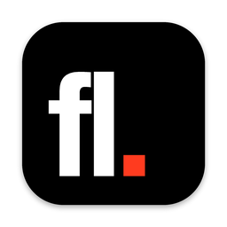

FL Shortcuts
Tes propres raccourcis pour FL Studio, des macros, et ton projet rangé en un clic. Sur Mac et Windows, gratuit.
Mac
macOS 13 ou plus récent · Apple Silicon et Intel
Mode d'emploi- Ouvre FLShortcuts.pkg et suis l'installation.
- Lance FL Shortcuts : son rond arrive en haut de l'écran.
- Clique Autoriser : le clavier, puis le son de FL.
Si macOS dit qu'il ne peut pas vérifier l'appli : Réglages Système › Confidentialité et sécurité, tout en bas, Ouvrir quand même. Fais-le seulement pour un fichier téléchargé depuis cette page.
Windows
Windows 10 ou 11 · x64 et ARM
FLShortcuts-Windows-Setup.exe- Double-clique sur l'installeur, puis Installer.
- Son logo reste dans la barre des tâches : un clic ouvre son menu.
- Ouvre FL Shortcuts, puis FL Studio, dans cet ordre.
Si Windows affiche « Windows a protégé votre ordinateur » : Informations complémentaires, puis Exécuter quand même. Mode d'emploi.
Ce que ça fait
- Tes raccourcisAppuie sur une touche : tu vois ce qu'elle fait dans FL, et tu la changes.
- MacrosPlusieurs actions de FL sur une seule touche, écrites en quelques étapes.
- Organiser⌘⌥O ou Ctrl+Alt+O dans FL : Channel rack, Mixer et Playlist rangés par famille, dans une copie.
- CommunautéDes macros et des raccourcis partagés par d'autres, avec un compte.
- Pause⌃⌥⌘F sur Mac, Ctrl+Alt+Maj+F sur Windows.